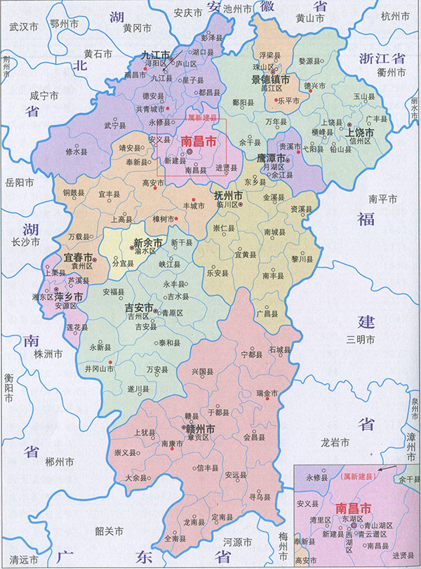

我的家乡之地理美食篇
地理位置
(想获得更多信息请点击图片！)

江西，简称赣，因公元733年唐玄宗设江南西道而得省名，又因江西最大河流为赣江而得简称。
省会南昌，位于中国东南部，在长江中下游南岸，处于北纬24°29′14″至30°04′43″与东经113°34′18″至118°28′56″之间。
东邻浙江、福建，南连广东，西接湖南，北毗湖北、安徽。江西为长江三角洲、珠江三角洲和闽南三角地区的腹地。
家乡美食
(想获得更多信息请点击图片！)
- 南昌糊羹
糊羹是南昌特色小吃之一。历史悠久，营养价值极高。它是用鸭血和腊肉等食材搭配而成的美味小吃。
鲜香可口，咸甜适中，口口留香，回味无穷，深受外来食客们的欢迎，如果你要是有机会来了南昌，一定要去喝上一口南昌人爱吃的糊羹，让你的旅途不孤单。
- 九江白浇鳙鱼头
白浇鳙鱼头是江西九江的传统特色小吃。它是用鳙鱼和辣椒等食材烹饪而成的美味佳肴。
香气扑鼻，口感微辣，肉质鲜美，肥而不腻，滋味醇厚，营养丰富，老少皆宜，也是餐桌上常见的下酒菜，开胃下饭。
- 上饶灯盏果
灯盏果是用大米和萝卜等食材制作的一道风味小吃，是上饶的特色美食。集鲜、香、辣于一身，美观大气。
好看又好吃，香软嫩口，让人垂涎三尺。如果有幸能够吃上一口，将会永远记住它的味道。
- 景德镇景德板鸭
景德板鸭是景德镇的传统小吃之一。景德板鸭在江西远近闻名，无一不知，家喻户晓。肉嫩骨脆，咸淡适中，色香浓郁，口口留香，老少皆宜，深受全国各地食客们的喜爱。